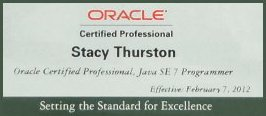
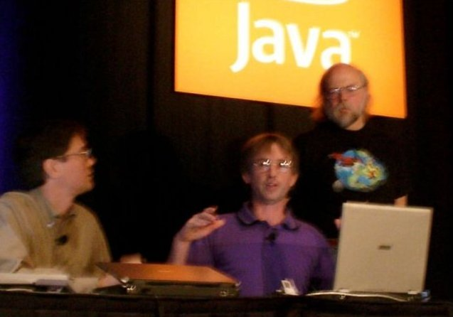
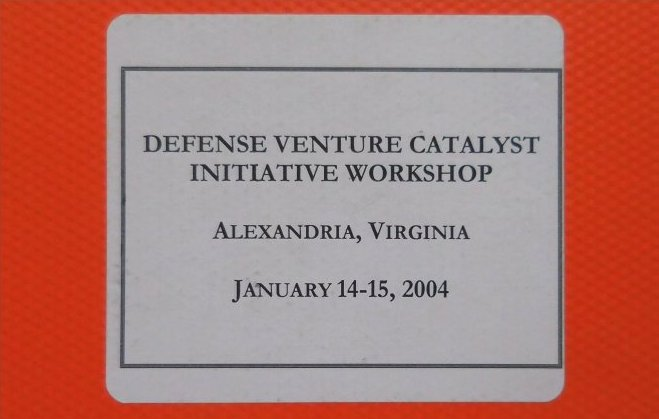
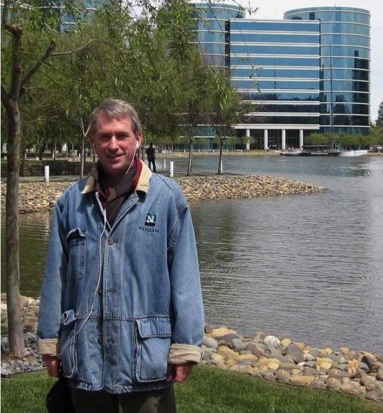
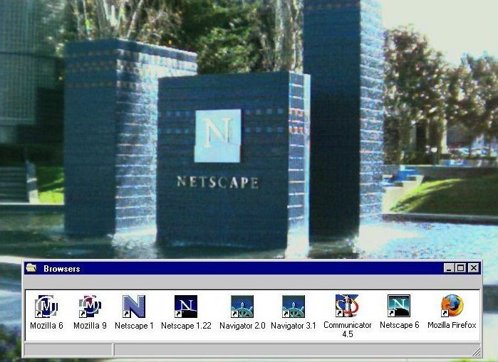
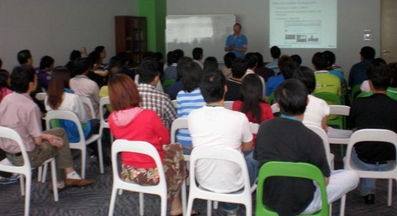
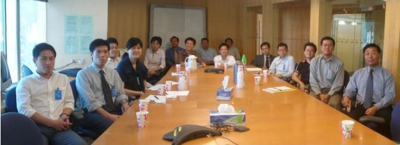
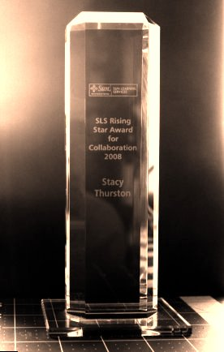

About
About the Author
Stacy David the author of this website.
My Links
- LinkedIn profile
- My Twilio GitHub Repositories
- YouTube channel
- Wired Magazine article on my Netscape recruitment video.
About Tiger Farm Press
Tiger Farm Press is the name under which I publish my content on the internet.
It's located in California's Central Valley, east of the San Francisco Bay Area. The company started August, 2012, with the goal to produce and publish my books and other content.
Tiger Farm Press Links
Links of My Interest
- Marrin’s Bookshop, on AbeBooks.com
- James Patterson Teaches Writing MasterClass
- Dreamhost.com - website host
- Michael Williams's web site: Blue Sky Workshop
- Internet connection speed test
Computer Work
Career Highlights
|
I was part of the team who developed the Java SE 7 Certification questions and answers. As a result, I am an ORACLE Certified Professional. I'm on the left, in the photo.  |
|  |
James Gosling, Java language inventor, was my co-presenter at the Sun Microsystems Pre-day Java One Learning event in San Francisco. 700 in the audience. |
|
2007, I lectured at Beijing University, a great honor. A student was assigned to show myself and another presenter the campus. |
|  |
2004, I was a co-founder of Peer Sites. I demonstrated how our technology could circumvent their firewall. A US Army colonel comment to the room, "Doesn't this scare you?" Mark Kvamme of Sequoia Capital, Sandhill Road venture capital company, supported my attending and presenting Peer Sites's technology at the US Department of Defense's Venture Catalyst Initiative. |
Course Developer
I designed and developed technical training courses for customers, partners, and employees, who were administrators, developers, architects, implementers.
|  |
2016, me at Oracle headquarters wearing my Netscape jacket. |
|
2010, Sun Microsystems Menlo Park, California offices, where I had an office before Oracle bought Sun. Now, it is the Facebook headquarters. |
|  |
1998, Netscape's company fountain, Mountain View, CA. |
Presentation Highlights
|
2009, Sun Tech Days, one day seminar to 100 students in Hyderabad, India. |
|  |
2007, Kula Lumpur lecture at a large Southeast Asia bank developer site. |
|  |
2006, Hong Kong presentation. |
|  |
I was presented with the Collaboration award by the leaders of the Sun Microsystem Learning department team because I'm known as a positive helpful person. |